10. Односвязный список
Теория, примеры и иллюстрации по теме.
Материалы и примеры по пунктам
Односвязный список
Связный список (англ. List) — структура данных, состоящая из элементов, содержащих помимо собственных данных ссылки на следующий и/или предыдущий элемент списка.
Узел хранит значение и указатель next. Поля head и tail занимают постоянную память. Расход на список зависит от размера значения, указателя, выравнивания и аллокатора.
Односвязный список - список, который хранит указатель только на следующий элемент списка (или только на предыдущий).
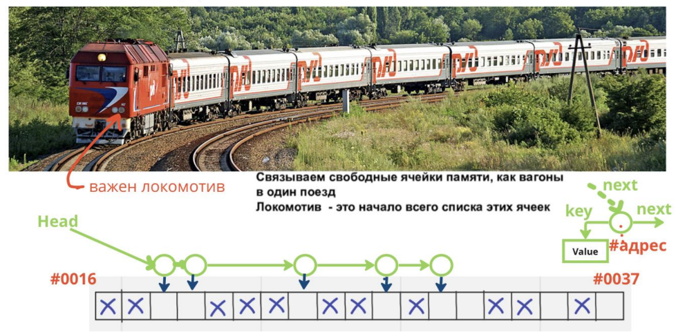
Когда полезен связный список
-
Размер заранее не известен
-
Размер во время задачи постоянно изменяется
-
Набор данных может быть полностью заменен или удален
-
Часто нужно удалять/добавлять данные
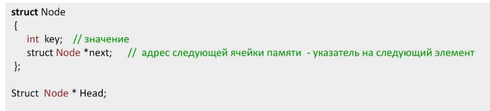
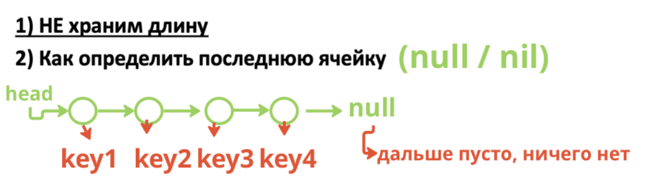
Вставка узла в список
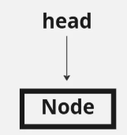
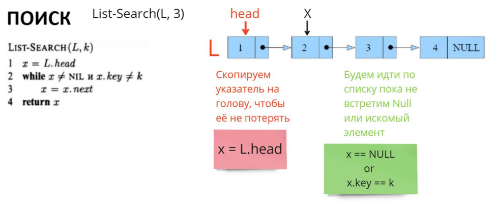
- Вставка в пустой список.
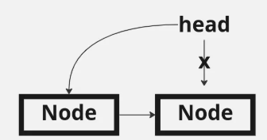
- Вставка в начало списка.
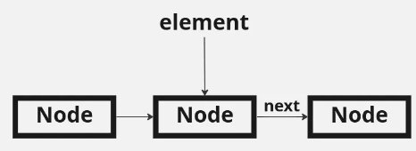
Удаление элемента (head, последнего, по номеру)
- Вставка по индексу
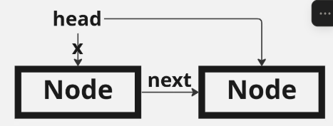
Удаление головы
Оценка + описания вставок.
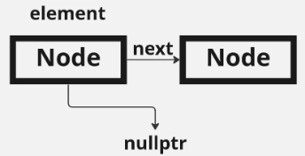
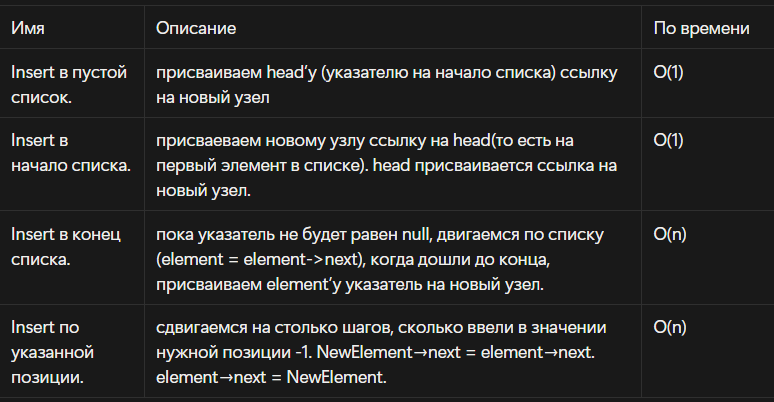
Удаление последнего
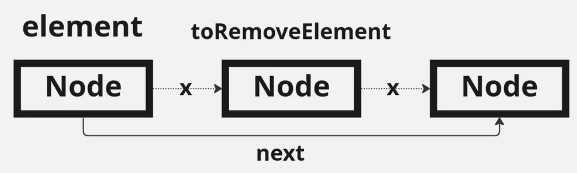
Удаление по индексу
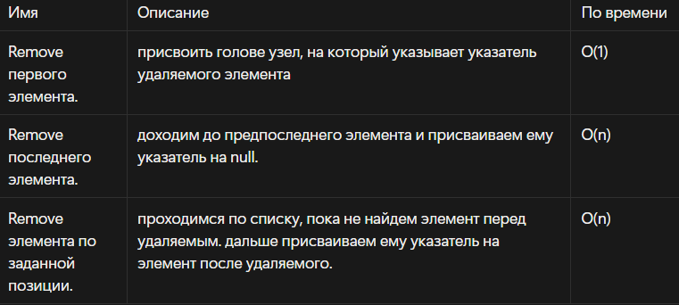
Ограничения:
-
Узлы хранят не только значения, но и указатели на следующие узлы ⇒ требует больше памяти.
-
Обход требует больше времени, а обратный обход невозможен в односвязных списках.
-
Сложность прямого доступа к элементу
Применимость
Списки используются тогда, когда программист не знает заранее, сколько элементов будет содержать его программа.
Схемы и рукописные примеры
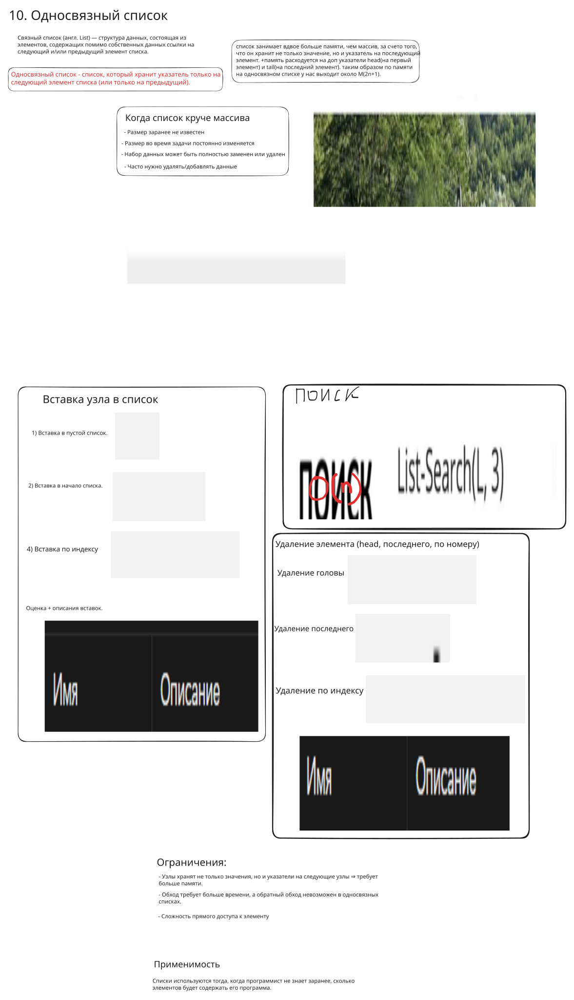